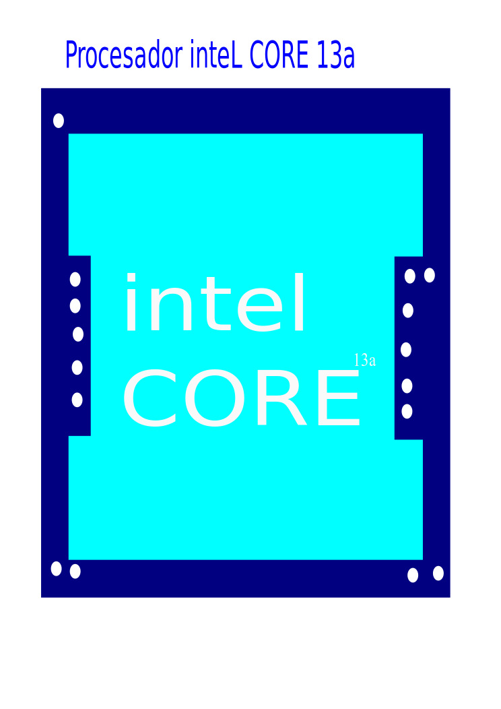
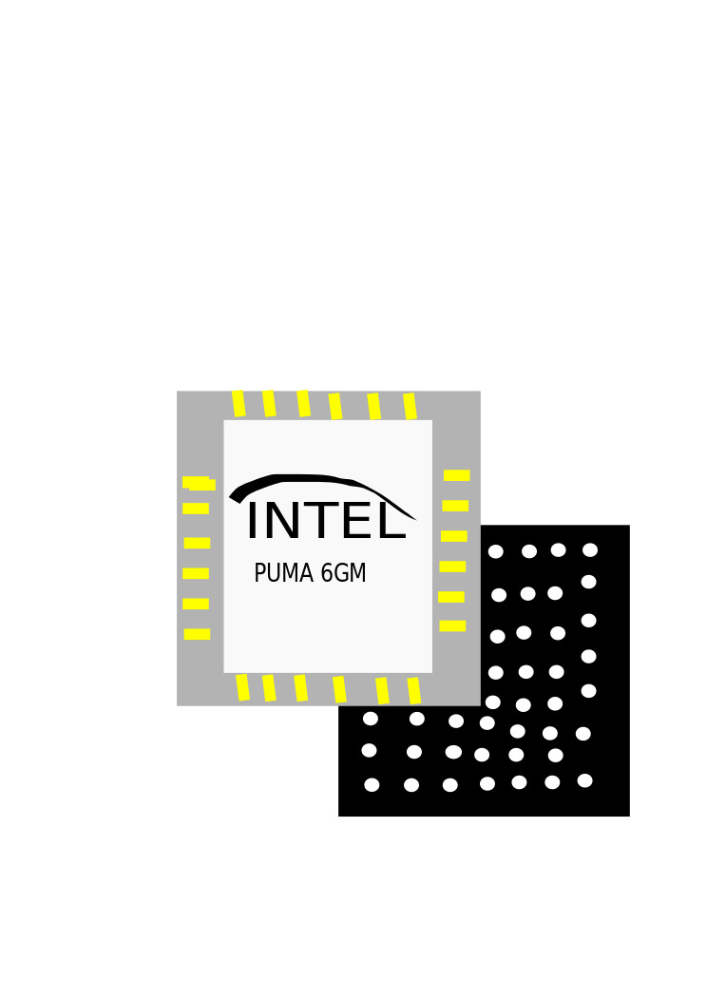
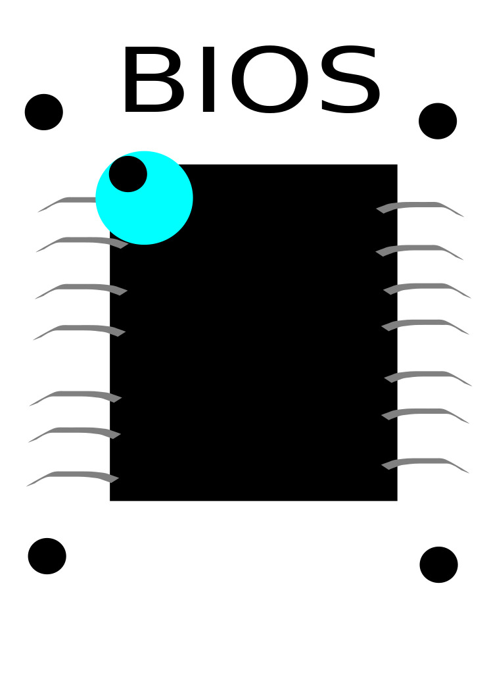

CATÁLOGO
Inicio
Periféricos
Procesadores
Memorias
Discos
Carrito
Inicio Periféricos Procesadores Memorias Discos Carrito
Procesadores

Procesador Intel Core de 13ª

Intel H470 Chipset

FLASH BIOS
es un chip volátil, lo que significa que se puede reescribir, en este caso sin necesidad de utilizar un dispositivo especial para borrar la información. Por esta razón, la BIOS de la memoria flash se puede actualizar de forma fácil y permanente, e incluso los usuarios sin experiencia pueden trabajar con ella. Para ello es necesario un programa que permita la grabación, que se realiza con pulsos eléctricos.